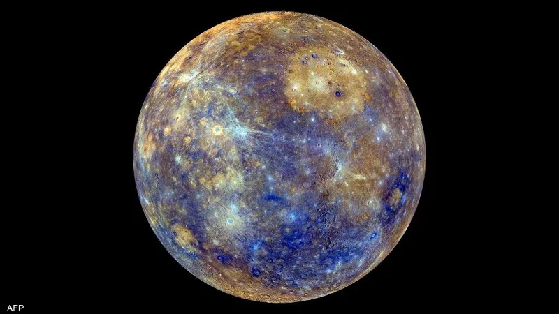
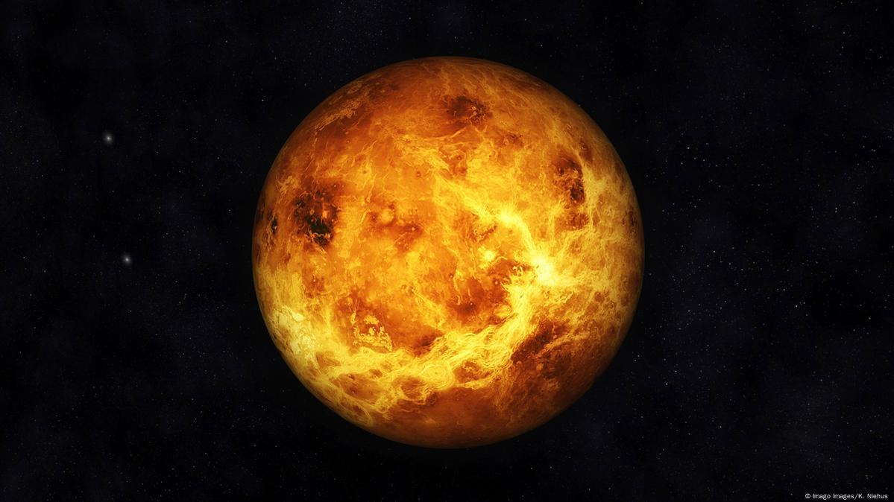
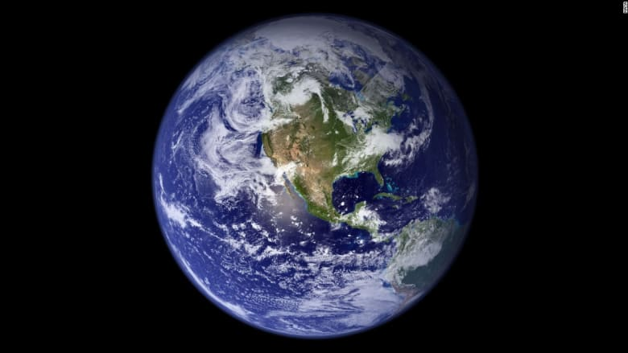
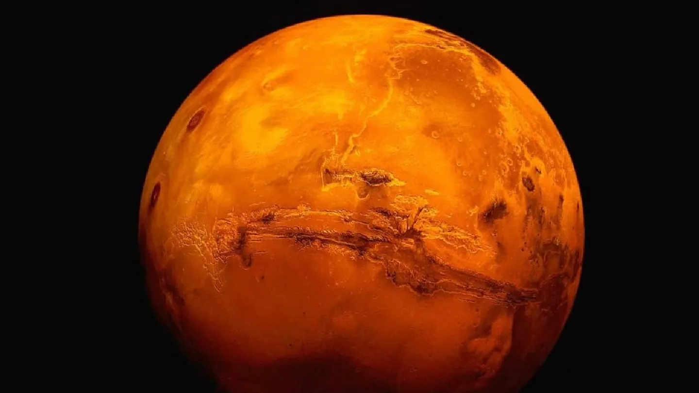
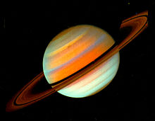
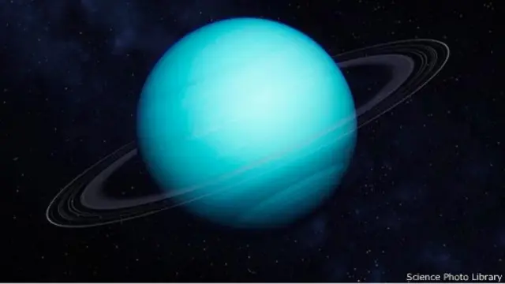
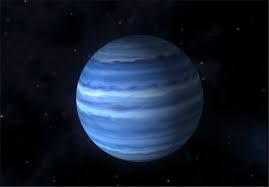

تعريف المجموعة الشمسية
النظام الشمسي أو المجموعة الشمسية أو المنظومة الشمسية هي النظام الكوكبي الذي يتكون من الشمس وجميع ما يَدور حولها من أجرام بما في ذلك الأرض والكواكب الأخرى. يَشمل النظام الشمسي أجراماً أخرى أصغر حجماً هي الكواكب القزمة والكويكبات والنيازك والمذنبات، إضافة إلى سحابة رقيقة من الغاز والغبار تعرف بالوسط بين الكوكبي. تدور أيضا حول الشمس ولكن بشكل غير مباشر توابع الكواكب التي تسمى الأقمار الطبيعية أو اختصارا الأقمار، والتي يَبلغ عددها أكثر من 150 قمرًا معروفًا في النظام الشمسي، معظمها تدور حول العمالقة الغازية
الكواكب
عطارد
عطارد هو واحد من أربعة كواكب صخرية في المجموعة الشمسية، وهيئته الصخرية تماثل الأرض. إنه أصغر الكواكب في المجموعة الشمسية، فنصف قطره الاستوائي يصل إلى 2439.7 كم. يُعتبر عطارد أصغر من أكبر قمرين في النظام الشمسي، وهما غانيميد وتيتان. يتألف عطارد بنسبة 70% من تركيب معدني و30% من مواد السيليكات.
 إغلاقالزهرة
الزُّهَرَة هو أحد الكواكب الأرضية الأربعة وهذا يعني أنه يشبه الأرض في تركيبه الصخري كما يشبه في الحجم والكتلة. وغالبا ما يوصف بتوأم الأرض. قطر الزهرة أقل من قطر الأرض بستمائة وخمسين كيلومتر فقط وكتلته تساوي 81.5% من كتلة الأرض.
 إغلاقالأرض
الكرة الأرضية هي خامس أكبر الكواكب في مجموعتنا الشمسية، وثالث أبعد الكواكب عن الشمس. إذ تبعد الأرض عن الشمس 150 مليون كيلومتر. وتمتاز الكرة الأرضية عن سائر الكواكب في مجموعتنا الشمسية بمميزات عديدة، منها وفرة الأكسجين في الغلاف الجوي والمياه السائلة على سطحه، وكلاهما من أهم مقومات الحياة
 إغلاقالمريخ
وهو رابع كوكب في الترتيب من حيث البعد عن الشمس. وهو كوكب صحراوي يمتاز ببرودته الشديدة وجوه المغبر، كما أن غلافه الجوي رقيق للغاية. ويتشابه المريخ مع الأرض في كثير من المعالم مثل تغير فصول السنة، والثلوج التي تغطي القطبين، وتغير الطقس وانتشار الأخاديد والجبال والبراكين الخامدة ومميزات أخرى يمكن العثور عليها في كوكبنا.
 إغلاقالمشتري
المشتري خامس الكواكب بعداً عن الشمس وأكبر كواكب المجموعة الشمسية. وهو عملاق غازي وكتلته أقل بقليل من 1/1000 من كتلة الشمس، لكنها تساوي ثلثي كتلة مجموع باقي كواكب المجموعة. ويضم تصنيف العمالقة الغازية كل من زحل وأورانوس ونبتون إضافةً إلى المشتري. ويطلق على هذه الكواكب الأربعة اسم الكواكب الجوفيانية.
 إغلاق
إغلاق
زحل
زحل أبعد كوكب عن الأرض تم اكتشافه بالعين البشرية المجردة. يبلغ طول اليوم في زحل 10.7 ساعة فقط، والسنة تعادل 29 سنة أرضية. زحل الكوكب الأكثر رياحًا في نظامنا الشمسي. اكتشفه عالم الفلك الإيطالي جاليليو جاليلي عام 1610، وتمت رؤية زحل لأول مرة من خلال التلسكوب.
 إغلاقأورانوس
أورانوس (رمزه: ⛢) هو سابع الكواكب بعدًا عن الشمس، وثالث أضخم كواكب المجموعة الشمسية، والرابع من حيث الكتلة. سمي على اسم الإله أورانوس (باليونانية القديمة: Οὐρανός) في الميثولوجيا الإغريقية. لم يتم تمييزه من قبل الحضارات القديمة على أنه كوكب رغم أنه مرئي بالعين المجردة، نظرًا لبهوته وبطء دورانه في مداره.
 إغلاقنبتون
تبلغ كتلة نبتون 17 مرة كتلة الأرض. وهو أكبر قليلًا من توأمه القريب أورانوس الذي يعادل 15 مرة كتلة الأرض. يكمل نبتون دورة واحدة حول الشمس كل 164.8 سنة في معدل مسافة حوالي 30.1 وحدة فلكية (4.5 مليار كم). سمي نبتون نسبةً إلى إله الماء والبحر في الميثولوجيا الرومانية (نيبتون) حيث تم اكتشافه في 23 سبتمبر عام 1846.
 إغلاق